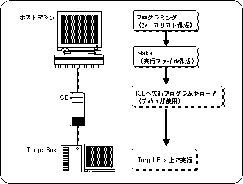

Return to menu | Go to next page
Sega 3D game library (abbreviation: SGL) is a group of functions for 3D graphic control provided for Sega Saturn software developers. Each function in the library (especially each function in the calculation library) is an algorithm designed by a programmer who has mastered the processing capability of Saturn, so high-speed processing is possible.
◆
This chapter explains the software development procedure using the SEGA 3D game library and notes on using the library.
The flow of Sega Saturn software programming using SGL is shown below.

Programming, Compile , debugging, etc.
Generates an executable file including compilation work.
Emulates the operation of the Sega Saturn main CPU SH2. By loading the execution program into the ICE, you can check the operation of the created program.
Loads, executes, and debugs at the source level.
Can be connected to ICE and operates in the same way as Sega Saturn.
Caution
For details on how to use the ICE and debugger, see the respective manuals.
- HITACHI E7000 SH7604 emulator
- SEGA SH7604 E7000 Graphical User Interface Software